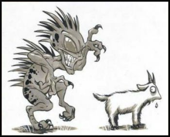

|

The chupacabra or chupacabras (literally "goat-sucker"; from chupar, "to suck", and cabra, "goat") is a legendary creature in the folklore of parts of the Americas, with its first purported sightings reported in Puerto Rico. The name comes from the animal's reported habit of attacking and drinking the blood of livestock, especially goats.
Physical descriptions of the creature vary. It is purportedly a heavy creature, the size of a small bear, with a row of spines reaching from the neck to the base of the tail.
Eyewitness sightings have been claimed in Puerto Rico, and have since been reported as far north as Maine, and as far south as Chile, and even being spotted outside the Americas in countries like Russia and the Philippines, but many of the reports have been disregarded as uncorroborated or lacking evidence. Sightings in northern Mexico and the southern United States have been verified as canids afflicted by mange. According to biologists and wildlife management officials, the chupacabra is an urban legend.
Name:
Chupacabras can be literally translated as "goat-sucker", from chupar ("to suck") and cabra ("goat"). It is known as both chupacabras and chupacabra throughout the Americas, with the former being the original word, and the latter a regularization of it. The name in Spanish can be preceded by a singular masculine article (el chupacabras), or the plural masculine article (los chupacabras).
History:
The first reported attack occurred in March 1995 in Puerto Rico. Eight sheep were discovered dead, each with three puncture wounds in the chest area and completely drained of blood. A few months later, in August, an eyewitness, Madelyne Tolentino, reported seeing the creature in the Puerto Rican town of Canóvanas, when as many as 150 farm animals and pets were reportedly killed. In 1975, similar killings in the small town of Moca were attributed to El Vampiro de Moca ("The Vampire of Moca"). Initially, it was suspected that the killings were committed by a Satanic cult; later more killings were reported around the island, and many farms reported loss of animal life. Each of the animals was reported to have had its body bled dry through a series of small circular incisions.
Puerto Rican comedian and entrepreneur Silverio Pérez is credited with coining the term chupacabras soon after the first incidents were reported in the press. Shortly after the first reported incidents in Puerto Rico, other animal deaths were reported in other countries, such as the Dominican Republic, Argentina, Bolivia, Chile, Colombia, Honduras, El Salvador, Nicaragua, Panama, Peru, Brazil, United States, and Mexico.
Reputed origin:
A five-year investigation by Benjamin Radford, documented in his 2011 book Tracking the Chupacabra, concluded that the description given by the original eyewitness in Puerto Rico, Madelyne Tolentino, was based on the creature Sil in the science-fiction horror film Species. The alien creature Sil is nearly identical to Tolentino’s chupacabra eyewitness account and she had seen the movie before her report: "It was a creature that looked like the chupacabra, with spines on its back and all... The resemblance to the chupacabra was really impressive," Tolentino reported. Radford revealed that Tolentino "believed that the creatures and events she saw in Species were happening in reality in Puerto Rico at the time," and therefore concludes that "the most important chupacabra description cannot be trusted." This, Radford believes, seriously undermines the credibility of the chupacabra as a real animal.
In addition, the reports of blood-sucking by the chupacabra were never confirmed by a necropsy, the only way to conclude that the animal was drained of blood. An analysis by a veterinarian of 300 reported victims of the chupacabra found that they had not been bled dry.
Radford divided the chupacabra reports into two categories: the reports from Puerto Rico and Latin America where animals were attacked and it is supposed their blood was extracted, and the reports in the United States of mammals, mostly dogs and coyotes with mange, that people call "chupacabra" due to their unusual appearance.
In late October 2010, University of Michigan biologist Barry O'Connor concluded that all the chupacabra reports in the United States were simply coyotes infected with the parasite Sarcoptes scabiei, whose symptoms would explain most of the features of the chupacabra: they would be left with little fur, thickened skin, and rank odor. O'Connor theorized that the attacks on goats occurred "because these animals are greatly weakened, they're going to have a hard time hunting. So they may be forced into attacking livestock because it's easier than running down a rabbit or a deer."
Although several witnesses came to the conclusion that the attacks could not be the work of dogs or coyotes because they had not eaten the victim, this conclusion is incorrect. Both dogs and coyotes can kill and not consume the prey, either because they are inexperienced, or due to injury or difficulty in killing the prey. The prey can survive the attack and die afterwards from internal bleeding or circulatory shock. The presence of two holes in the neck, corresponding with the canine teeth, are to be expected since this is the only way that most land carnivores have to catch their prey.
There are reports of stray Mexican Hairless Dogs being mistaken for chupacabras.
|